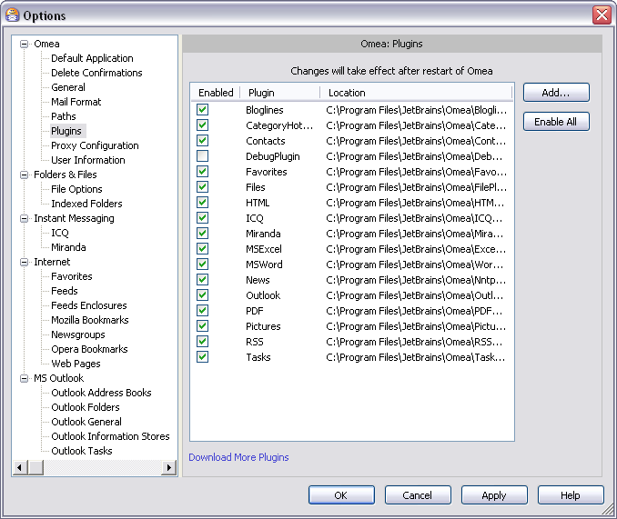
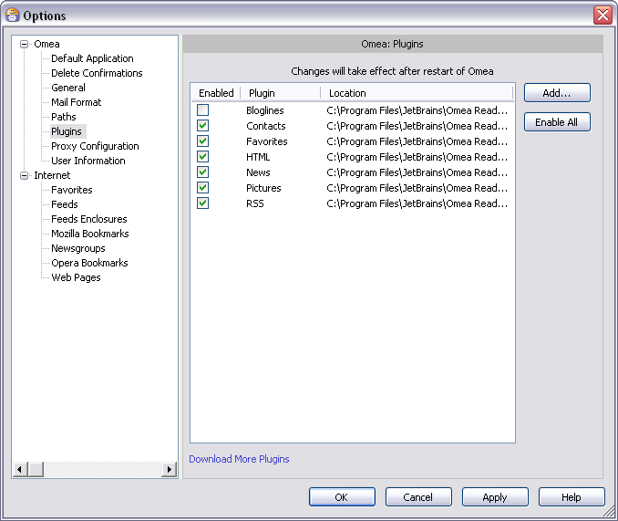

Plugins
You can access this option from the Main menu: Tools | Options: Omea: Plugins
This option page displays a list of "plugins". Plugins support several product features, and also integrations with various external programs and/or file types.
You can enable and disable the various plugins by checking or clearing the checkbox next to the plugin name. For example, if you do not use ICQ instant messaging, you can disable the ICQ plugin.
You can enable and disable the various plugins by checking or clearing the checkbox next to the plugin name. For example, if you do not subscribe to RSS/Atom feeds (and don't plan to in the future), you can disable the RSS plugin.
 Options dialog showing Plugins options
Plugins List
The list of plugins contains the following:
Contacts
Supports the Contacts feature, including merging of Contacts.
Recommended setting: enabled
Favorites
Support for the browser bookmarks (including Internet Explorer Favorites) feature.
Recommended setting: enabled. The only reason to disable would be if you never work with Web pages.
Files
Support for the indexing of folder and files.
Recommended setting: enabled
HTML
Support for HTML files and documents (including Web pages). Also implements support for plain text files.
Recommended setting: enabled. Even if you never work with the Web, you may still need to deal with files/documents formatted with HTML, and with plain text files.
ICQ
Integration with the ICQ instant messaging client application.
Recommended setting: enabled if you use ICQ, otherwise you can safely disable it.
Miranda
Integration with the Miranda instant messaging client application.
Recommended setting: enabled if you use Miranda, otherwise you can safely disable it.
MS Word
Integration with MS Word and support for Word documents.
Recommended setting: enabled
News
Support for Internet newsgroups, including the internal news reader.
Recommended setting: enabled. If you never access Internet newsgroups you can safely disable it.
Outlook
Integration with Microsoft Outlook® which provides access to Outlook e-mail from within Omea.
Recommended setting: enabled, unless you do not use MS Outlook, in which case you can safely disable it. Note that Outlook-related features such as Task won’t work from within Omea.
Support for Adobe’s Portable Document Format (PDF) and internal viewing of PDF files.
Recommended setting: enabled
Pictures
Support for common image file formats so that images can be seen in Omea Reader Omea Pro when you access resources that contain them.
Recommended setting: enabled
RSS
Support for RSS and Atom feeds, including the internal aggregator (reader).
Recommended setting: enabled. If you never access RSS or Atom feeds you can safely disable it.
Tasks
Support for the Omea Tasks feature.
Recommended setting: enabled
Download More Plugins Link
A link to http://www.jetbrains.com/omea/plugins/ web page where you can access and download more plugins for working with Omea.
Button Controls
The Plugins page contains the following button controls:Add
Enables you to add new plugins from JetBrains or third-party developers.
Enable All
Click to enable all the plugins in the list.